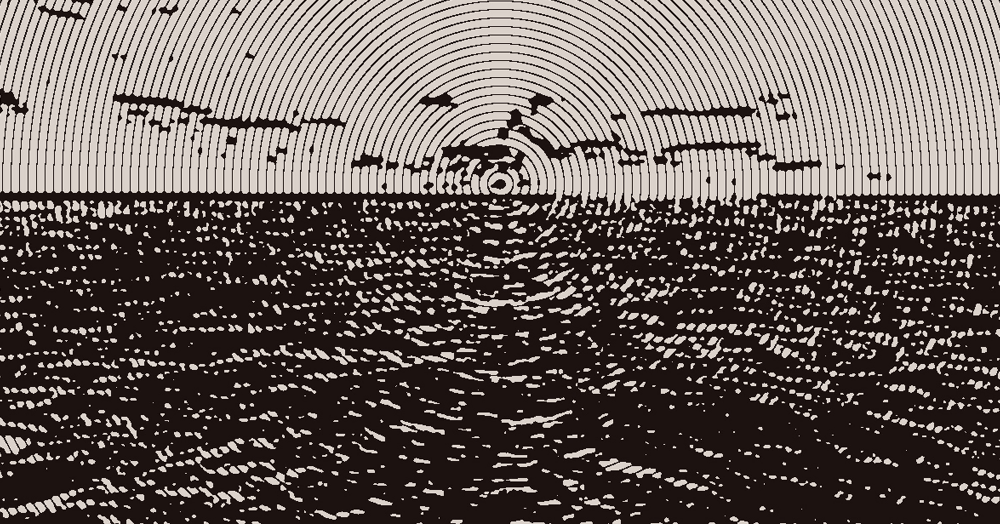

Voreios Sea
The last obstacle one must pass to reach the rest of the world.
Depending on the season it can be quite dangerous to traverse, leading Atomos to be somewhat separated from the rest of the world.